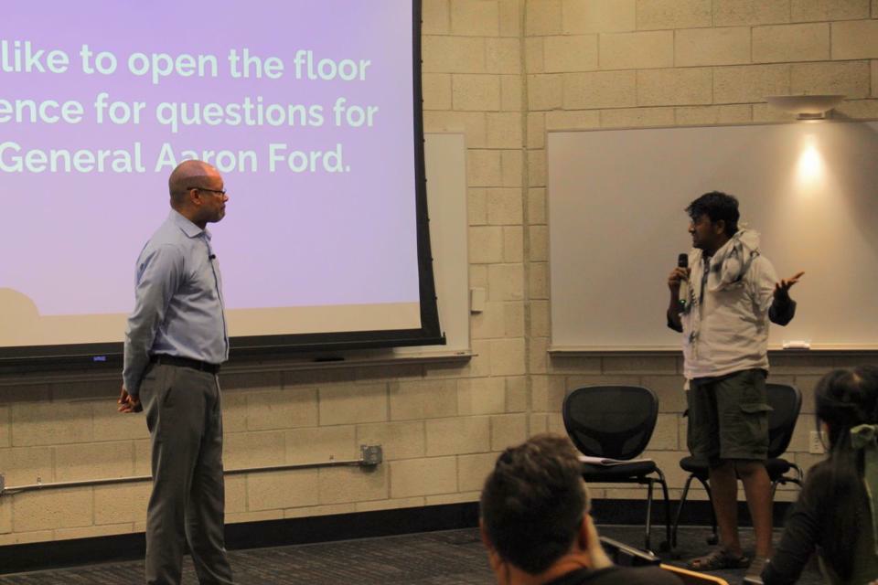

From a UNLV conversation to a governor-elect’s victory
Celebrating Aaron Ford’s election—and keeping graduate workers’ voices at the center of what comes next.
About eleven months ago, I spoke with then–Attorney General Aaron Ford about the challenges faced by graduate assistants at UNLV. Today, I attended Governor-Elect Aaron Ford’s victory address. For me, these two moments are connected by a question: will the people who sustain our universities have a meaningful voice in their working lives?

At the victory event


The commitment I want to see carried forward
I endorsed Aaron Ford and urged him to support recognition of a graduate-assistant union at UNLV. As I recall from his pre-election campaign, he committed to supporting that recognition. In my experience as a graduate assistant, university authorities have resisted recognition for a long time. That history makes the commitment particularly meaningful to me.
This is my account of our exchange and my reason for supporting him. I am not reporting that a union has now been recognized, or that Ford made a specific legal or procedural promise beyond the support I describe.
Academic excellence depends on working conditions
Graduate assistants teach, tutor, support research, and help students succeed. Many international graduate workers do this while navigating visa-related uncertainty and separation from family. We bring commitment and skill; we also need fair compensation, clear workload expectations, supportive working environments, and a meaningful collective voice.
I see union recognition as a constructive step toward a stronger university. Respectful dialogue and collective representation can help graduate workers and university leadership address problems with greater clarity and accountability.
Celebration, followed by accountability
Congratulations to Governor-Elect Aaron Ford, and thank you to everyone who devoted time and effort to this campaign. Attending the victory address was a moment of hope. I look forward to seeing his campaign commitment translated into concrete support for graduate workers and the appropriate steps toward union recognition.
A victory is a beginning. The work ahead is to turn promises into fairer institutions—and to ensure that the people doing the teaching and research are heard.